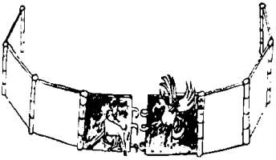

On üç gündür at sırtındayım. Kaba etlerim yara oldu. Geriye, Batıya, at sürüyorum. Yenge İsen’in sözünü tutmakla iyi mi ettim bilmiyorum. Batı kağanlığındaki geçim olanakları daha çok ve daha iyiymiş. Doğru olabilir. Bu Ötüken yurdunun bize yaramadığı ise kesin. Sağa sola, dört bucağa dağıldık gittik. Beş yüz yıl önce Batı’dan on binlerce ev olarak gelen boyların geriye dönen tek çocuğuyum. Altımdaki Azman Aygır güçlü ve hızlı. Esenliğim yerinde. Arkamdan atlı kovalamıyor ya! Bazen eğlence için bir dörtnal koparıyoruz bozkırda. Uzaklardaki kayın ağaçlarının kayarak yanımızdan geçmesini seviyorum. Bunlara bakarken gözüm sağ veya sol yana, aşağıya kayıyor. Toz içindeki güzelim sarı deri çizmemi, dökme tunçtan parlak sarı üzengimi ve kayıp giden boz–sarı yeri görüyorum. Çok bakamıyorum. İçim kalkıyor. Oldum olası at tutar beni zaten.
İki telli kopuzum sırtıma çapraz asılmış, dağarcığım tıka basa dolu. İçine Yenge İsen kendi elleriyle yaptığı tarhanayı ve kurutu koydu. İnançu Yaşıl amcam da kocaman bir yarım but at pastırması verdi. Yol boyunca okuyacak nesnem de var. Çapanımın iç cebinde küçük, kalın, deri ciltli bir İrk Bitig yazması var. Batı’dan gelen atalarımın getirdiği, Tabgaç veya Uygur alfabesine hiç benzemeyen bir alfabeye bizim de kendi halimizce birkaç işaret ekleyerek oluşturduğumuz Orhun yazısıyla yazılmış, çok cici bir fal kitabı bu. Bitmesi tükenmesi asla yok. Sayfalarını her açışla yeni bir fal çıkıyor. Her seferinde çok eğleniyorum okurken. Yirmi yıl kadar önce büyük amcam Bögü Yabaş Tigin yazmış. Ne akıllı adam! Kişi yolculukla yol yoldaşından özge ne isler?
Yanımda silah, pusat, cebe adına pek bir şey yok. Belimdeki ufak bıçakla, terkideki dengin içinde tuttuğum yay var. Canım taze et islediğinde çıkarıp kullanıyorum. Av avlaya, kuş kuşlaya, geyik tavşan vura vura geçiyor günlerim. İki gün önce de karşıdan gelen iki Kitan delikanlısı ile karşılaştık. Uygurca konuştuk. Bana armağan olarak kara bir tavşan verdiler, ben de onlara boz bir tavşan verdim. Bozkırın yolcuları birbirlerine ne verebilir? Karşılıklı gülüştük. Sonra yolumuza gittik.
Ağaçlı bir bozkır bu bizim gittiğimiz. Düz yerlerde bile tek tük ağaçlar görünüyor. Uzaktan görünen yeşil gök tepelerde ise çam, köknar, kayın, huş, ne ararsan var. Baş başa, sırt sırta vermiş ağaç öbeklerinin aralarında da yeşil boşluklar, yeşil otluklar, yemyeşil yaylalar görünüyor. Su kıyısına yakın yerlerdeki yüksek kayınların yanından her geçişimizde Azman, yaprakların esen yel ile hışırdamasından biraz tırsıyor. Buralarda iyice kapıp koyveriyoruz. Bazen ılık, bazen serin bir yel yüzümüze çarpıyor, bazen de Hangay’dan inen buz gibi bir yel arkamızdan koşturarak bizi yakalamaya çalışıyor. İri toy kuşlarını, kahverengili beyazlı kazları, küçük, beyaz kır sıçanlarını, boz bulanık renkli yeritlerini, Selenge’nin kıyısında tembel tembel güneşlenen veya sırtüstü yattıkları yerden karınlarının üstünde balık yiyen suitlerini ürkütüyoruz. Yeritleri yere dalıyor, suitleri suya. Bazen de uzaklarda bozkurtları görüyoruz, usulca yatmışlar pusuya.
Bozkırda yaşam var! Bozkır, yurdum Ötüken’in bozkırı bu bozkır. Mayıs ayında olduğumuz için otlar gür, yemyeşil, her yan çiçek dolu, bazen al bir çiçek tarlasına dalıyoruz, kızıllıklar içinde koşuyoruz da koşuyoruz. Kızaran gözlerimizle Azman’la birbirimizi kızıl albızlar gibi görmeye başlıyoruz. Sonra mor, sonra sarı bir çiçek denizine giriyoruz. Azman’a en çok mor renk yakışıyor! Adaşım Tengere Kayra’nın göklerdeki yuvarlak kızıl gemisi nasıl göğü ikiye biçerse, biz de toprağı yararak ikiye, geçiyoruz bu bozkırdan.
Gök, adı gibi gömgök, yani masmavi bu bozkırda. Her akşam Azman’la batan güneşi yakalama oyunu oynuyoruz. Bu koşudan sonra dinlenme ve otlanmanın geleceğini bildiği için Azman Aygır da bu oyunu çok seviyor. Gemi azıya alarak koşması tam görmelik. Çılgınca koşuyor, koşuyoruz. Kulaklarımda yankılanan kendi yoksul nal seslerimize düşümde on binlerce âlâmın allarının çıkardığı nal sesleri karışıyor. Yenge İsen’in düğünlerde tahta kaşıklar ile boş yayık kabına vurarak çıkardığı sesler gibi, ama yüz binlercesi bir uğurdan, takımlı sesler basıyor ufukları. Bir zamanlar atalarımın dört bucağa yaptığı seferlerdeymişim gibi geliyor bana. Coşuyorum. Yüzlerce kopuzdan, bir o kadar borudan, onlarca davuldan, ağızda çalınan demir sazlardan hep birden çıkan ezgiler duyuyorum. Bu müzik benim kanımı deli deli akıtıyor. Sağa sola yay çekip ok fırlatıp duruyorum. Bozkırda at üstünde sıkılınca, ayaklarımızın uyuşukluğu bizi eyerden kaldırıp atmak üzereyken bunu biz hep yaparız. Çinliler isterse deli desin, hiç takmayız! Bir kez, deliğine dalmakta olan bir beyaz sıçanı kuyruğundan vuruyordum az daha! Her çıkışın bir inişi oluyor haliyle. Böyle su gibi hızla akarken, kunduzların yaptığı bir gölcüğe girmiş gibi anında duruluyorum. Dizgine asılıyorum. Azman’ın ağzında köpükler, patlak gözlerinde hep aynı “niye durduk, ölümüne koşuyorduk ne güzel” bakışı. Uyuşmuş bacaklarımla atlıyorum aşağı. Kös kös, dağıttığım sevgili oklarımı toplamaya gidiyorum.
Bazen, ıraktan, içlerinde atalarımın sonsuz uykularını uyuduğu kurganları görüyorum geçerken. Kimileri çok eskidiği için yassılmış, kimileri daha yakında yapıldığı için sivrice, hanlarınki irice, beğlerinki bellice, kara sökten olanların tümsekçe, başından yeli eksikçe olmayan tepeler bunlar. Erlik mi aldı, yer mi gizledi? Ne oldu benim her biri yüzlerce, binlerce atı olan atalarıma? Hüzünleniyorum. Gözlerim doluyor, kara başımı ince bir sis basıyor. İçimden ağlamak geliyor. Yol hali işte. Kimi zaman kapkara düşünceler basıyor, kimi zaman kabıma sığamıyorum. Güneşi yakalayamayacağımız anlaşılınca ben biraz anlamazdan geliyorum, hiç tınmıyorum. Azman kişneyerek beni uyardığını sanıyor. En çok da bunu seviyorum:
“Tüh, yine mi yakalayamadık bu tekerlek azmanını, Azman! Bak iyi ki söyledin. Tengere Tardu Tigin göklerde tekerlenip duran tek bir tekerleği bile tutamadı diyecekler...”
Hergele oğlu hergele, hergelece kişniyor!
Dün tam mola vermiştik ki otların arasından bir tavşan fırladı. Azman’ı tutabilirsen tut! Hani yorulmuştuk, hani bitmiştik? Sen de kişnemiştin behey salak aygır! Yok, o da peşinden. Sol üzengiden çıkarmış olduğum ayağımı geriye güç taktım. Aklı sıra tavşan avına çıktık. İki diş tavşan eti yiyecek diye çılgına dönüyor. Sapık etobur! Benim bu tavşanı indirmeden bu salak ve dik başlı attan inmemin hiç oluru yok. Güçlükle terkideki denge uzandım. Arasından yayımı çektim. Eyerin yanındaki okluktan kemik temrenli bir ok aldım. Tavşan da akıllı imiş. Kerata aniden geri döndü. Azman’ı çevirmeye hiç uğraşmadım, yine olduğum yerde gövdemi geriye çevirdim, yayı kulağımın hizasına kadar çektim ve bıraktım. Oğlum Tengere Tigin, niye obada dolaşmaz şu tavşanlar ki, şöyle vurunca kız kutuz içinde bir havan olsun? Neyse, boynunun arkasından yedi oku tavşan. Tanrı savsın, benim Azman’ıma gelse öyle bir ok, davul gümlemesi gibi bir şey olur. Değil mi Azman?
Ama tavşan dediğinin kafatası ne kadar kalındır ki? Basık, tok bir sesle karışık küçük bir çatırtı çıktı. Ön ayakları zınk diye durdu. Başı öne dönük, tepetaklak gitti yoksul. Durumu anlamayan arka ayakları, hâlâ koşmak istediklerinden olsa gerek, havada çırpmıyordu, ileriye, doğuya doğru koşmuş, son koşusunu o yöne doğru tutturmuştu. Ben ise tam ters yöne gidiyordum. Yay çeken kolum yine de Doğu’ya erişiyordu. Azman’dan indim. Tavşanı kulaklarından yakaladım. Ensesinden, değerli kemik uçlu okumu çıkardım. Uzun arka bacaktan ile rastgele tepinip duruyordu tavşan. Küt tırnakları ile yumuşak deri pantolonumu çizme çabalarına gülümsedim. Başımı kaldırdım. Yüzümü günbatısına çevirdim. Selenge Irmağı’nın ışıl ışıl, gök-gümüş suları, batmakta olan güneşin son ışıkları altında san-kızıl altına kesilmişti.
Yanağımdaki çakmak demirini iri beyaz çakmak taşına çakarak boy boy kıvılcımlar çıkardım. Bunların en arsızı taşın altına tuttuğum kava yapıştı. Kav için için yanadursun, topladığını çalı çırpıyı üstüne yığdım, üfledim püfledim, kocaman, güçlü bir ateş yaktım. Ateşin üç kenarına Selenge kıyısından aldığım büyük, yuvarlak, ak taşları dizdim. Artık “eşim yok, yuvam yok” ama “odum var, ocağım var.” Tavşanımı bir dala geçirip ateşe uzattım.
Hey, gözünü sevdiğim Ötüken Yış. Senin gibisi var mı? Böyle ağaçlık, böyle yeşil. Sulak, sazlık? Ördeklik, kazlık? Ertesi gün artık sınırlarının dışına çıkacağım ve seni bir daha asla görmeyeceğim! Artık ayrılmak üzere olduğum Ötüken Yış’ın bu kıyıcığında, yüzüm, çok uzaklarda kalan, artık hiç görünmeyen Hangay Dağı’na çevrili, gözlerimde iki damla yaş, içimden gelen “dön... dön” çığlıklarını Köktanrı’ya bir yakarış ile bastırmaya çalıştım. İnançu Yaşıl amcam ile Yenge İsen tarafından büyütüldüğüm için anadan atadan ayrıldım diyemem, ama evim barkım oradaydı. Atadan yeğ bildiğim amcam ile anadan yeğ bildiğim yengem oradaydı. Sunağım tapınağım, odum ocağım oradaydı. Varım yoğum oradaydı. Katar katar develerim, tavla tavla atlarım, ağıl ağıl koyunlarım vardı diyemem, ama şu salak Azman’ın anası doru kısrak, babası kör aygır oradaydı. Aşık oynadığım koyun kemikleri, su içtiğim bakır tas... Küçükken içinde yüzdüğüm ağaç yalak... Gövdesine ok attığımız kuru ağaç... Çekiçle tepesine tepesine vurup çan sesleri çıkardığımız büyük demir örs... Sağına soluna bıçak sapladığımız eski yayık. Tanrının unuttuğu bu bozkır akşamında kimden ne saklım var benim artık? Kopuzum ne zaman tıngırdamaya başlamış?
Güzelim, görklüm, yıldız bakışlım, inci gülüşlüm, ay yüzlüm, turna boyunlum, kayın boylum, kaz gerdanlım, keklik sekişlim, sülün süzülüşlüm, kirpi büzülüşlüm! Ak ellerini bir gün tutmadığım, kızıl kor dudaklarını bir gün tatmadığım, yanında bir gece yatmadığım, gelin olunca ar edip yüzüne bir daha bakmadığım, saçı sarı, gözü gök, boyu uzun, beli ince, dili arı, soyu bizden değilse de ak sök, sopu gömgök Abınçu Kız’ın mezarı da orada değil mi? Ah, tavşan tavşan! Sen ne için yerinden örü durdun tavşan? Sen ne için ileriye, doğuya döndün tavşan? Sen ne için beni yüreğimden vurdun tavşan? Senin gündoğusunda nen kaldı tavşan? Sen de mi ardında bir koca yurt bıraktın? Sen de mi bencileyin sevdiğine ıraktın? Ey kanlı Azman, ey kan köpüklü aygır, ey sağır oğlu sağır, dur dedim durmadın, elimi kana bulattın. Erlik çarpsın ki yoluma gidiyordum tavşan! Artık bu kadarını çekemem, kaldıramam. Ben yerimden yurdumdan ayrılırken gözlerimdeki o iki damlayı tutamam!
Tutmadım da... Selenge’nin suları kararırken, bozkırın tek ışığı benim yaktığım ateşten gelirken, ötleğen kuşları öterken, yerler sular evlerine dönerken, evi olmayan sıçan deliğine girerken, bu soğuk mayıs gecesi burada, Ötüken eteklerinde doya doya ağladım. Sonra nar gibi kızarmış tavşanımı buz gibi kımızım eşliğinde gövdeye indirdim. Sen ne tatlı bir şeymişsin tavşan! Azman’ın payına da bir budun düştü, o da sağ ol diyor tavşan!
Kepeneğime büründüm, sırtüstü yattım. Koca, kalın eyeri yastık yapmak gibi bir salaklık yapmadığım için, yumuşak yanağımın içindeki yassı but pastırma yastık olmaya daha elverişli olduğu için, yağız yer delinmeyip hâlâ altımda ve mavi gök çökmeyip hâlâ üstümde olduğu için, ikisi arasında yaratıldığım için, başım kımızdan tütsülü olduğu için ve özümün kutu var olduğu için düşe düşe tatlı bir düşe düştüm. Ben ölmüş anamdan doğarken yoksul kel başımı öperek okşayan gökteki anamız Umay, gözkapaklarıma küçük öpücükler kondurdu. Uyumadan önce son gördüğüm, Ötüken göklerinde kıpır kıpır göz kırpan yıldız orduları oldu.